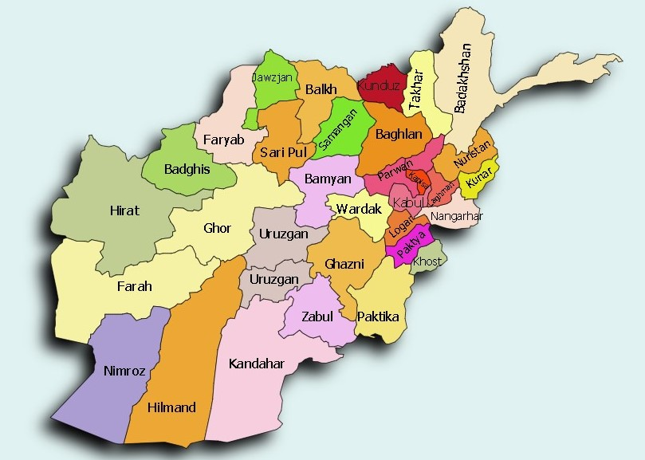
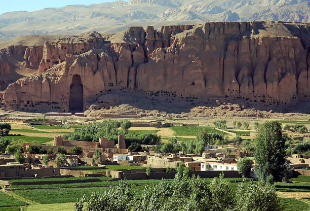
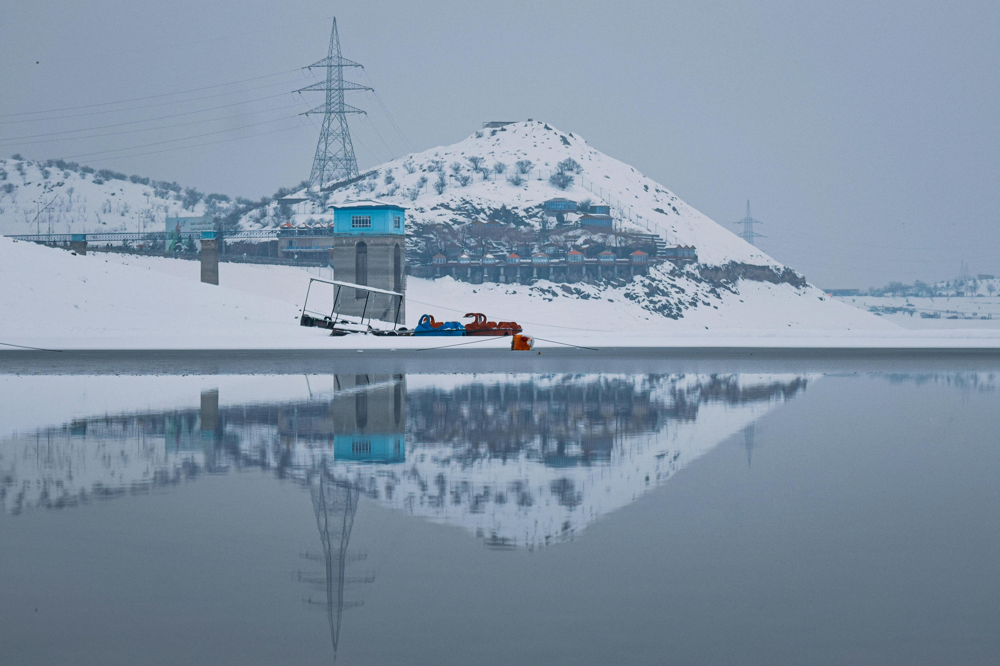
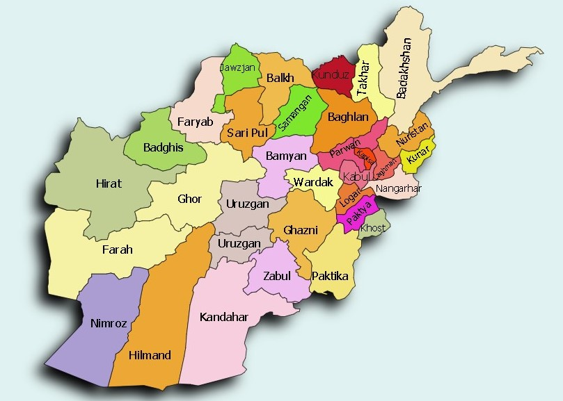
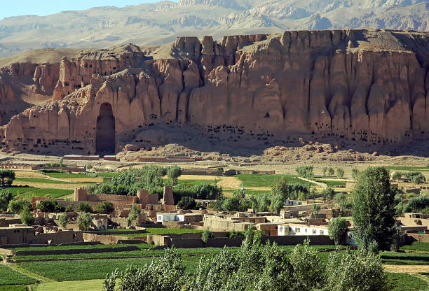
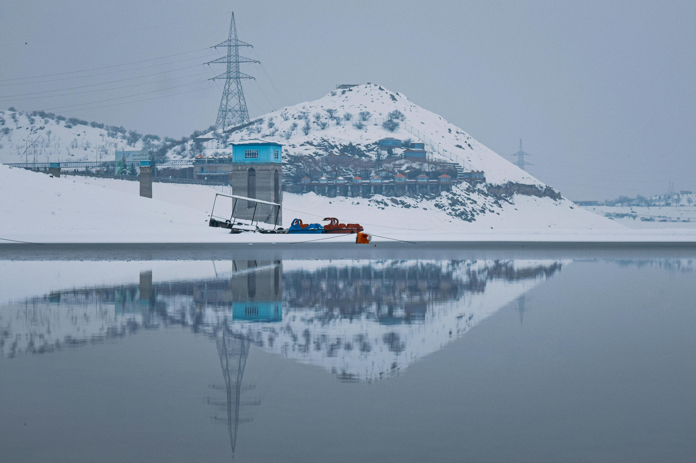
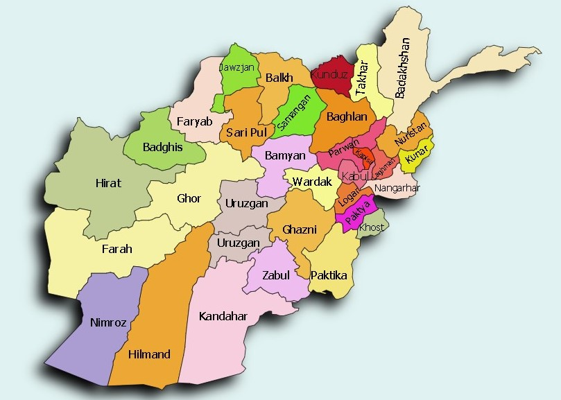
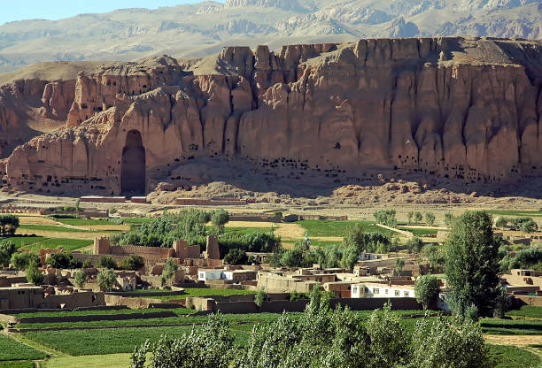
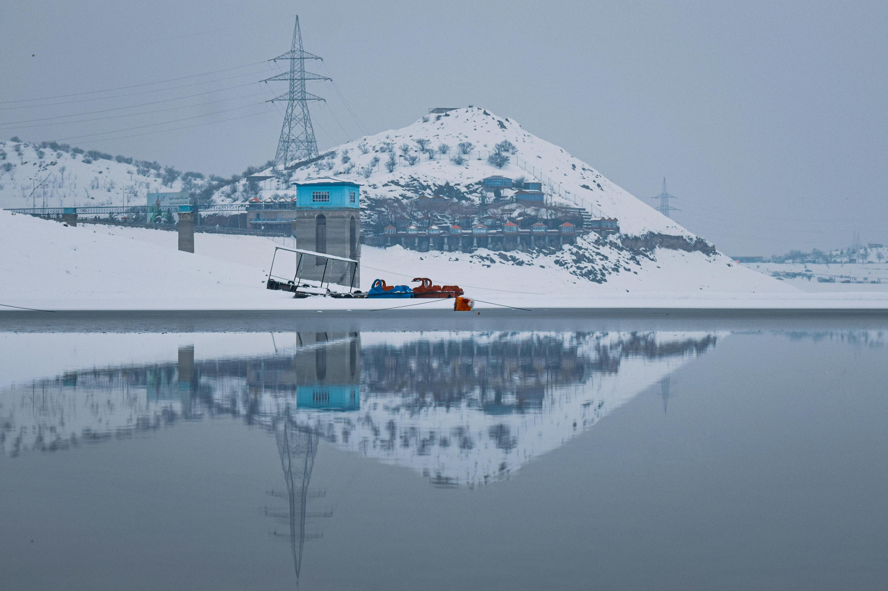

I am a 29 year old Afghan man. I have worked as an electrical and construction assistant in Afghanistan. I am social and positive by nature, and I am an active, hardworking and careful worker. My goal is to gain work experience in the coding field. I am eager to be able to find a job in this field that I have studied and to be able to develop my ability in this field. I immigrated from Afghanistan to Finland in 2015, here I was accepted as an immigrant and after receiving a residence permit, after that I started learning Finnish language, then I was accepted in this school, I started learning coding. If you want more Information about my life you can sand me a message in this email address. matiasmasih@gmail.com.
Afghans have both common cultural features and those that differ between the regions of Afghanistan, each with distinctive cultures partly as a result of geographic obstacles that divide the country. Family is the mainstay of Afghan society and families are often headed by a patriarch. In the southern and eastern region, the people live according to the Pashtun culture by following Pashtunwali (the Pashtun way). Key tenets of Pashtunwali include hospitality, the provision of sanctuary to those seeking refuge, and revenge for the shedding of blood. The Pashtuns are largely connected to the culture of Central Asia and the Iranian Plateau. The remaining Afghans are culturally Persian and Turkic. Some non-Pashtuns who live in proximity with Pashtuns have adopted Pashtunwali in a process called Pashtunization, while some Pashtuns have been Persianized. Those who have lived in Pakistan and Iran over the last 30 years have been further influenced by the cultures of those neighboring nations. The Afghan people are known to be strongly religious.
Tourism in Afghanistan is regulated by the Ministry of Information and Culture. There are at least 350 tourism companies operating in Afghanistan. Tourism was at its peak before the 1978 Saur Revolution, which was followed by decades of war. Between 2013 and 2016, Afghan embassies issued between 15,000 and 20,000 tourist visas annually. Afghanistan has four international airports, which include Kabul International Airport, Mazar-i-Sharif International Airport, the Ahmad Shah Baba International Airport in Kandahar, and Herat International Airport. It also has a number of smaller domestic airports such as Bamyan Airport, Bost Airport, Chaghcharan Airport, Farah Airport, Fayzabad Airport, Ghazni Airport, Jalalabad Airport, Khost Airport, Kunduz Airport, Maymana Airport, Nili Airport, Tarinkot Airport, and Zaranj Airport. Guest houses and hotels are found in every city of Afghanistan. Some of the major hotels in Kabul are the Serena Hotel, the Hotel Inter-Continental Kabul, and the Safi Landmark Hotel. Most places in the country serve traditional Afghan cuisine.
The history of Afghanistan, preceding the establishment of the Emirate of Afghanistan in 1823 is shared with that of neighboring Iran, central Asia, and the Indian subcontinent. The Sadozai monarchy ruled the Afghan DurraniEmpire, considered the founding state of modern Afghanistan. Human habitation in Afghanistan dates back to the Middle Paleolithic era, and the country's strategic location along the historic Silk Road has led it to being described, picturesquely, as the ‘roundabout of the ancient world’. The land has historically been home to various peoples and has witnessed numerous military campaigns, including those by the Persians, Alexander the Great, the Maurya Empire, Arab Muslims, the Mongols, the British, the Soviet Union, and most recently by a US-led coalition. The various conquests and periods in both the Indian and Iranian cultural spheres made the area a center for Buddhism, Hinduism, Zoroastrianism, and later Islam throughout history. The Durrani Empire is considered to be the foundational polity of the modern nation-state of Afghanistan, with Ahmad Shah Durrani being credited as its Father of the Nation. However, Dost Mohammad Khan is sometimes considered to be the founder of the first modern Afghan state. Following the Durrani Empire's decline and the death of Ahmad Shah Durrani and Timur Shah, it was divided into multiple smaller independent kingdoms, including but not limited to Herat, Kandahar, and Kabul. Afghanistan would be reunited in the 19th century after seven decades of civil war from 1793 to 1863, with wars of unification led by Dost Mohammad Khan from 1823 to 1863, where he conquered the independent principalities of Afghanistan under the Emirate of Kabul. Dost Mohammad died in 1863, days after his last campaign to unite Afghanistan, and Afghanistan was consequently thrown back into civil war with fighting among his successors. During this time, Afghanistan became a buffer state in the Great Game between the British Raj in South Asia and the Russian Empire. The British Raj attempted to subjugate Afghanistan but was repelled in the First Anglo-Afghan War.However, the Second Anglo-Afghan War saw a British victory and the successful establishment of British political influence over Afghanistan. Following the Third Anglo-Afghan War in 1919, Afghanistan became free of foreign political hegemony, and emerged as the independent Kingdom of Afghanistan in June 1926 under Amanullah Khan. This monarchy lasted almost half a century, until Zahir Shah was overthrown in 1973, following which the Republic of Afghanistan was established.


